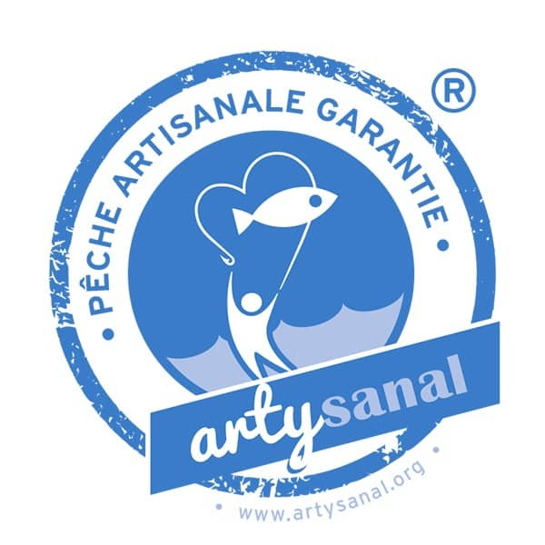

Riche en Oméga-3 et donc en bonnes graisses (voir notre article sur le gras), le saumon est l’invité de choix sur les tables des fêtes de fin d’année. Toutefois, l’Anses recommande de ne pas en manger plus de deux fois par semaine en raison du risque de contamination aux métaux lourds. Le nutritionniste Anthony Berthou nous a aidés à déterminer les critères pour bien le choisir.
L’espèce : privilégiez le saumon d’Alaska
Le saumon atlantique est aujourd’hui constitué de saumon d’élevage à 90%. Il est plus facile de trouver du saumon pacifique sauvage. Quant au saumon d’Alaska, il est systématiquement sauvage.
L’avantage du saumon sauvage est qu’il est riche en astaxanthine, un colorant naturel présent dans les crevettes qui lui donne sa couleur rouge, qui est également un excellent antioxydant !
À l’inverse, le saumon d’élevage est naturellement gris en raison de son alimentation. C’est pourquoi les éleveurs ajoutent une version synthétique de l’astaxanthine, et disposent ainsi d’un éventail de couleurs en fonction de la teinte qu’ils souhaitent donner au saumon, à l’image du DSM SalmoFan™ développé par le laboratoire Hoffman-LaRoche.

Par ailleurs, les saumons d’élevage font souvent l’objet d’une administration importante d’antibiotiques (principalement pour le non bio). Les conditions d’élevage, conduisant à une surpopulation de poissons, sont également souvent pointées du doigt.
L’inconvénient du saumon sauvage est qu’il est paradoxalement plus contaminé que le saumon d’élevage, notamment en métaux comme le mercure. Cela s’explique par la pollution des océans, et donc par la contamination de l’alimentation des saumons.
Le saumon d’Alaska est celui qui s’en sort le mieux car la mer est moins polluée. C’est donc celui qui permet de bénéficier des bienfaits du saumon sauvage en limitant les méfaits liés à la contamination des océans.
Le fumage : gare aux arômes cancérigènes !
Si vous optez pour un saumon fumé, prêtez attention à la façon dont a été réalisé le fumage.
La mention « fumée au bois de … » garantit un fumage par combustion lente provenant d’une seule essence, généralement de chêne et de hêtre qui sont réputées comme les meilleures. Attention à la mention « arôme fumée » : ces arômes contiendraient des substances cancérigènes selon un rapport de l’EFSA (Autorité européenne de sécurité des aliments).
La mention « jamais congelé » : un poisson qui n’a rien perdu de sa qualité
Cette mention signifie que le poisson n’a pas été congelé ni avant, ni après qu’il soit fumé. En effet, un début de congélation est souvent réalisé sur le saumon fumé pour faciliter son tranchage sans que la mention “ne pas recongeler” ne soit indiquée. Or, les Oméga-3 se dégradent à basse température, une congélation de votre saumon diminue donc sa qualité nutritionnelle. Toutefois, cette oxydation est très lente, si vous le congelez seulement quelques jours avant les fêtes, il ne devrait pas avoir perdu ses bons acides gras.
Pour aller plus loin sur le sujet des Oméga-3, vous pouvez consulter l’article d’Anthony Berthou : http://www.sante-et-nutrition.com/danger-omega3/
Le label bio : une contamination importante
Le saumon bio est nécessairement du poisson d’élevage. L’an dernier, une enquête de 60 millions de consommateurs a révélé que le saumon bio était davantage contaminé en métaux lourds et pesticides que le saumon conventionnel. Cela est lié au fait que l’alimentation des saumons bio se rapproche de celle de leur état naturel et est donc constituée de farines et huiles de poisson, quand les saumons d’élevage conventionnel sont nourris avec des huiles et farines végétales. Or, cette alimentation plus naturelle est paradoxalement plus contaminée à cause de l’état de pollution de nos océans.
Seul léger avantage, le saumon bio contient moins d’acides gras trans (qui sont des mauvaises graisses) que le saumon conventionnel.
Pêche et élevage responsables : à quels labels se fier ?
La consommation mondiale de saumon a triplé depuis les années 1980, entraînant une surpêche importante. WWF a ainsi alerté sur la disparition progressive des populations de saumon sauvages. En 20 ans, la population de saumon atlantique a été divisée par deux selon les estimations.
Plusieurs labels existent :
| MSC (Marine Shepward Council)
|
|
| ASC (Aquaculture Stewardship Council)
|
|
|  | Artysanal
|
| Pêche Durable
|
Pour plus d’informations sur les différents labels, vous pouvez consulter notre article sur le sujet.
Et si on passait à la truite ?
La truite saumonée est une bonne alternative au saumon. Moins grasse, elle est naturellement moins polluée, les polluants se stockant essentiellement dans les parties grasses. Seul petit bémol, elle est légèrement moins riche en Oméga-3.
De la même manière, la truite fumée est une alternative plus intéressante que le saumon fumé. Si la problématique du sel et du fumage reste la même que pour le saumon, elle est moins grasses et donc moins polluée en métaux lourds.
L’idéal reste de varier les sources de saumon afin d’éviter l’accumulation des mêmes contaminants à long terme, et de consommer le saumon occasionnellement (1 fois par semaine maximum).

Merci beaucoup pour tous ces renseignements sur le saumon et la truite c’est très intéressant.
D’ailleurs Je me sers beaucoup de Blomy pour tous les produits ce qui permet de se nourrir correctement.
Merci beaucoup pour tous ces renseignements sur la saumon et la truite.
On apprend vraiment à se nourrir correctement avec Blomy…d’ailleurs je m’en sers tout le temps depuis que je vous connais.
Encore mille mercis.
Merci Blomy pour cet article. On apprend beaucoup de choses intéressantes. Selon moi la truite est sans aucun doute mon poisson préféré.
Merci pour tous ces renseignements précieux qui permettent d’être plus vigilent lorsque l’on
fait les courses
Toujours excellents articles tres clairs et précis Bravo je suis passionné par votre site!
Merci pour toutes ces infos très intéressantes et très objectives sur le saumon. Continuez de bien nous informer. Encore merci.
Merci beaucoup. Ne lâchez pas.
Jai acheté chez LIDL. du saumon d’ ECOSSE pendant que l’écosse c’était bon Sur le sachet, était inscrit ; TRANSFORME et CONDITIONNE en POLOGNE .cest une Honte !!!
C’est génial ce que vous faites bravo j adore et j y contribue continuez et ne lâchez pas félicitations
Je vous remercie pour vos conseils. Votre neutralité me donne pleinement confiance en vos écrits.
I am actually pleased to read this website posts which includes plenty of
valuable facts, thanks for providing these kinds of information.
L’option truite saumonée me paraît être un bon compromis !
Intéressant mais j’étais au courant vu Émission sur le saumon par contre je pensais pas pour le bio je n’achetais que du bio. En tout cas moi j’ut Tout les jours Blomy quand je fais mes courses j’aimétais qu’il y a une application pour les compléments alimentaires vu que je suis Sans gluten y en a partout et lu article qui dit que les gélules végétal sont pas mieux que les capsules fait avec du porc
Merci pour vos articles. Décidément, même le saumon bio… Bref depuis quelque temps je privilégie les poissons gras de petite taille (sardine, maquereau, etc) car de par leur petite taille ils ont une petite quantité de métaux lourds au contraire des saumons.
Bonjour très intéressant merci
Bonjour , je ne vous connais pas depuis longtemps mais bravo pour ce que vous faites
je viens de lire 2 livres de Ch Brusset et il parlait de vous
franchement on se demande se qu’on peut encore manger sans se faire avoir
bonne continuation je reste avec vous
Super article.
J’en apprends beaucoup.
Merci pour votre travail.
Le saumon est intéressant pour ses apports en oméga 3 mais ce n’est pas la seule source. Comme c’est un prédateur situé en haut de la chaine alimentaire (comme nous) il a l’inconvénient d’accumuler les métaux lourds et autres polluants. Il faut donc effectivement comme le conseille l’article limiter sa consommation et alterner avec d’autre poissons moins pollués car situés en bas de la chaine mais aussi intéressants en terme d’apport (sardines, etc). Il faut aussi penser aux apports végétaux (graines de lin ou de chia)
Bonjour,
Après avoir participé aux activités de http://verdonxp.com/ vous serez pret pour pecher vous-même votre saumon en Patagonie!
Renseignez vous auprès d’une personne qui travaille ou a travaillé dans la production de saumon. Je crois que vous en mangerez moins souvent.
Bravo et alors …plus d’arguments de votre part seraient plus constructif. Ne pas affirmer sans démontré si vous voulez être crédible.
Claude je suis entièrement d’accord avec vous, je n’achète plus jamais de saumon ni tout autre poisson d’ailleurs provenant d’élevage après avoir vu un reportage sur la 5 il y a quelques années
Vous ne donnez aucune information, ni avis sur le saumon Sauvage du Pacifique (saumon Keta).
Il est de moins bonne qualité, je trouve, en terme de goût et consistance, un peu moins gras que celui de l’Atlantique (surtout d’élevage). Qu’en est-il des analyses toxicologiques, métaux lourds, et… ?
Je crois savoir que les éleveurs de saumons ont fait de réels efforts au niveau de l’alimentation des poissons.pour ma part je mange davantage de truites fumées et le prix est souvent plus abordable.
Merci pour tout. Dans les magasins je passe ma vie avec mon scan yuca a la main et je ne suis pas la seule loin de là.
Bravo. Et en final vous mangez quoi ?……
très très intéressant. merci
Mais à qui et à quoi se fier aujourd’hui pour manger correctement et qu’ont dans la tête les personnes qui pratiquent un Elevage de poisson de la sorte ?
Va-t-on vers une crise »vache folle » bis mais liée aux poissons ??
difficile de trouver du saumon non fumé ! merci des renseignement mais étonnée et déçue par le bio effectivement yuka apparait en orange alors? on ne sait plus . faire confiance aux bio ? j’ai un doute
pourquoi ne pas parler du la bel label rouge……
Attaquez vous à la qualité de la viande dans les supermarchés ! Même mon chien n’en veut pas : farines animales , hormones , à la cuisson un verre d’eau dans la cocotte ! Beurk !
Cet article me confirme ma conviction profonde : foutons la paix aux saumons, arrêtons de les manger et de les élever dans des conditions indécentes.
Vous affirmé sans rien démontrer…
Bonjour Julie , Bonne Année à vous ainsi qu’à votre équipe , oui, merci pour vos infos qui nous guident dans notre choix de consommation .
Merci pour ces infos précieuses
La seule et unique solution est de s’abstenir de manger du saumon , ces poissons aurons une vie plus longue et …..nous aussi!!!!
Rêveur…
Bonjour, merci pour tout les infos sur le saumon, un peu plus d’infos sur la truite . Bonne année 👍👍👍
Je vous suis depuis vos début et c’est très bien ´ Pratiquement tous les poissons sont pollués et ceux d eaux douces aussi
Surtout qu il y en plus les produits autres
Qu alimentaire
Depuis Fukushima, a-t-on publié des études sur une pollution des côtes nord-américaines , situées dans le sens du courant marin ouest-est ?
Je n’ose plus acheter de saumon d’Alaska…
Bravo très bonne analyse. Attendez la réponse de Blomy….
Très intéressant. Merci pour ces conseils clairs et précis, même si la conclusion à en tirer est décevante pour qui aime le saumon !
Ce n’est pas une présentation objective du sujet. Cette étude est incomplète.
Merci pour vos articles. Celui-ci n ‘est guère réjouissant pour celui qui aime réellement le saumon mais bon, comme j’aime aussi l’espadon, le marlin et le thon je pense que ma dose de métaux lourds a arriver au max… Bonnes fêtes à vous
Merci très interessant
Merci pour ce bel éclairage! Un peu déprimant malheureusement…
Bonne fin d’année!
Au final ,ça donne envie de ne plus manger de saumon du tout. Mais d’autres poissons sont aussi contaminés par les métaux lourds(thon ,espadon ,etc. si je ne me trompe) ou bien surpêchés et en voie de disparition. On nous a pourtant répété pendant des années qu’il fallait manger du poisson ,surtout gras. Maintenant on nous dit :mangez des sardines ,des harengs, des maquereaux… Peu festif et pas très bon(goût fort ,odeur forte telle qu’on ne peut les cuisiner que dehors ,au barbecue, en été, arêtes nombreuses,etc).
Comme il faut aussi manger moins de viande ,sommes-nous condamnés-malgré nous- à devenir végétariens, au risque de carences en protéines(surtout si on supprime aussi les produits laitiers)?
Bonne analyse. Végétarien… Vous ne savez peut-être pas que le cahier des charges du bio n’est pas correcte, l’eau d’arrosage des légumes et des arbres fruitiers et tout ce qui nécessite de l’eau pour se développé ne peut-être considéré bio dans le cahier des charges l’eau n’a pas reçu le label bio… Comprenne qui voudrais. L’eau ne peut obtenir le label bio. Les nappes sont chargées de nitrates à
un dosage que vous ne pouvez imaginer. Et ne parlons pas des produits céréaliers ou dérivés… Bon courage.
Si la population ne consommait pas aussi excessivement de la viande et n’était pas aussi demandeuse nous n’aurions pas ce problème.
Qui dit forte demande dit accroissement de l’élevage pour subvenir à ses besoins.
Si chacun faisait un petit effort en essayant de réduire d’un petit peu sa consommation de produits animaliers cela serait déjà un grand pas pour l’humanité et surtout notre planète qui s’éteint à petit feu.
Et ne vous en faites pas vous n’allait pas être carencé, il existe diverses sources de protéines notamment végétales (tempeh, tofu, lentilles, pois chiches, quinoa, légumineuses, certains légumes, oléagineux, spiruline… et j’en passe !)
Il suffit juste d’alterner et de varier les sources.
De plus il n’est pas nécessaire d’avoir recours aux produits laitiers dans notre alimentation, ils ne sont pas indispensables et même déconseillé à nos âges car notre organisme n’en a pas besoin :). C’est une idée encore malheureusement bien ancré dans les têtes à tort !
Bonjour du Cambodge
Bonne année..
Avec le riz….
C’est mieux que rien je pense
Merci pour votre analyse sur les saumons claire et précise. J’opterai éventuellement pour le saumon l’Alaska bien que je consomme désormais.. des truites fumées.
Nous avons fait le choix de nous abstenir de manger du saumon. Tant pis car j’adorais. Ça ne nous empêche pas de passer et par la même occasion vous souhaiter de bonnes fêtes 🎉
Nous avons fait le choix de nous abstenir de manger du saumon. Tant pis car j’adorais. Ça ne nous empêche de passer et par la même occasion vous souhaiter de bonnes fêtes 🎉
Bravo, continuez ! et bon bout d’an <3
Articles interessants merci beaucoup salutations et bonnes fêtes.
Parlez nous des crevettes importées, la pire saloperie d’élevage avec 23 produits toxiques ,antibiotiques , farines animales, pesticides….beurk !
Vos articles sont toujours aussi intéressants
Merci
Merci superbe à toutes l’équipe bravo pour votre travail
Excellent article, merci beaucoup à YUKA et à Julie!
J’adore, je valide, je like, je commente, je partage, je share, pouce bleu, I LOVE
lol
Bravo il n’y a que la foi qui sauve…
Merci à l’equipe pour cet article et l’interet qu’elle porte à notre santé. Bravo
Merci à YUKA de faire une analyse sérieuse entre le saumon D’Alaska et le » Werster Ross » D’Écosse. Après nous pourrons jugé de la pertinence de leur analyse.
difficile de trouver le saumon sauvage ALASKA chez le poissonnier
Vous n’en trouverez pas. Il est forcément conditionné, bonjour les conservateurs. A part cela tout va bien confère les informations de Blomy…
Merci pour cet article
257 commentaires uniquement du » Beleu Beleu «
Intéressant mais pas constructif.
J’ai lu que la consommation de saumon était interdite aux femmes enceintes en Norvège ce qui en dit long sur sa nocivité par contre rien n’inter Son exportation !
C’est tout à fait faut, il suffit d’aller en Norvège pour le savoir
L’utilisation d’antibiotique est quasi inexistente en elevate de Saumon Européen, les pigments sont de l’astaxanthine naturelles.. le saumon bio a une alimentation plus riche en protéine végétale (car les protéines de poissons fourrages ne sont jamais certifié bio..) donc article encore une fois plein d’erreur et de mauvaise information… qui suggère d’acheter du saumon frais de l’autre bout de la planète!!!! Et on s’etonne Que ça ne tourne plus rond….
Il faudrait être davantage transparent sur les conditions d’obtention des poissons et de tout le reste !! Sur les emballages d’abord. Et après on arrêtera de faire des erreurs, car tout le monde ne peut pas être du métier.
Et la truite bio , elle mange quoi ?
Hello Julie,
Merci pour toutes ces bonnes observations. Je trouve cependant que vous êtes bien tolérante pour les saumons Norvégiens et Écossais, qui sont devenus en 20 ans de véritables poisons alimentaires. Il ne reste effectivement plus que le saumon sauvage d’Alaska, qui reste à peu près « propre ». Pour l’instant…
le saumon de l atlantique n en parlons plus tres tres rare et reserver aux riches . pour le saumon du pacifique péché en Alaska ? donné comme nourriture aux chiens , je doute fort de sa qualité gustative pour l être humain?????
un ancien pécheur de saumon a la ligne et convaincu.
cordialement pierre
Bonjour,
que pensez-vous du label Alaska seafood annoncé comme excellent dans un article du magazine hors-série de Noël 2018 de Picard surgelés?
Merci
Bonjour,
que pensez-vous du label Alaska seafood annoncé comme excellent dans un article du magazine hors-série de Noël 2018 de Picard surgelés?
Merci
Les français , les plus gros con….sommateurs de saumon ! En Norvège les parcs appartiennent à là ministre des pêches ! Les écolos sont menacés … et continuez de vous gaver de ce poison .
Exactement !
Article instructif les divers label des méthodes de pêche n’enlève en rien la teneur en métaux lourd et autres dans la mer à quel saint se vouer.
Merci beaucoup pour les infos très intéressant
Joyeux Noël à toutes les équipes de yoga
Merci pour ces informations !!
Bonnes fêtes
Joyeuse fête de fin d’année et merci pour toutes ses informations interressentes,qui nous permettent de manger un peu plus sainement.
Article très intéressant comme d’habitude
Finalement je vais fuir le saumon , merci du conseil toujours utile . Bonnes fêtes de fin d’année
Merci pour ce nouvel article qui nous aide à y voir un peu plus clair 😜 Bonnes fêtes de fin d’année à toute l’équipe 🎄🎉🍾🥂
Félicitations à toute votre équipe
Belles fêtes fin de fin d’année
Bons baisers de San Francisco 😉👍!
Merci pour l’article très clair, toutefois je suis surpris par la conclusion « L’idéal reste de varier les sources de saumon afin d’éviter l’accumulation des mêmes contaminants à long terme »
Cela signifie-t-il que, quitte à accumuler les contaminants à long terme, doit on consommer des contaminants de différentes sources??
Merci pour ces informations détaillées et complètes, à la portée de tous.
Bonnes fêtes à tous.
Merci pour toutes s’est informations qui me serons très utiles sur un aliment qui nous est souvent présenté comme tres bon pour la santé !!!! ,??👍😀
Bonjour
Comment expliquer qu’un saumon pêché au milieu d’un océan soit contaminé aux métaux lourds ?
Excellente information très professionnel. Merci pour ce travail
Enfin un article clair et précis qui nous apporte de vraies réponses!
Merci à toute l équipe pour ce travail de fourmi, très pro et simple par la façon de communiquer, à la portée de tous, BRAVO À CHAQUE PERSONNE POUR CE TRAVAIL PRÉCIEUX.
🌲🥳belles fêtes à tous noël 🎄
Merciiii
Travail tout au long de l année bien sûr!
Merci
Très intéressant
Merci pour toutes ces informations !
Merci très bon article
Merci
Merci YUKA pour ces informations.
Bonnes Fêtes de fin d’année à toute l’équipe
cordialement
Nicole
Merci Blomy pour toutes ces informations concernant la consommation de saumon !
Bonnes fêtes de fin d’année à toute l’équipe …
Achat ce matin sur le plus beau marché de France à Sanary sur Mer du Saumon d’Alaska à 55€ le kg
Un véritable régal
Merci Julie et bonnes fêtes à tous
merci pour toutes ces infos bon noel à toute l équipe
Paule
Merci Julie pour toutes ces informations toujours aussi importantes. Pour rester dans le thème il existe aussi un poisson pour les connaisseurs qui est le brochet : a découvrir ici Site sur le brochet
Merci Blomy et joyeux Noel en partageant nos produits de saisons et locaux!!
Arretons de nous goinfrer c est pas ça faire la fête !!
Merci Julie
après toutes informations sur le saumon, on a envie de « limiter » sa consommation !!!!!!
on ne sait plus trop comment bien manger……………
Merci Julie
Sujet très intéressant
Intéressant sur le fond, mais ce texte contient beaucoup d’inexactitudes flagrantes.
Bonjour, ce serait intéressant que vous nous disiez ce qui vous semble inexact
Dans les fjords norvégiens , vous avez un mètre de » merde » , au fond de la mer ! Les élevages dans les parcs sont un scandale ! C’est que de la MER…… Bon appétit !
Je mange du saumon 3 fois par semaine,quel est l impact sur mon espérance de vie ?
À l’heure où je vous répond, vous êtes normalement déjà mort…
Pauvre idiot
Bonjour,
Merci pour ce petit rappel très intéressant sur le saumon !
Bonnes fêtes à toute l’équipe et MERCI pour votre appli…imitée mais pas égalée… (le lancement en 2019 d’une appli mise au point par les grands lobbies qui vont contrattaquer, me fait doucement sourire…. ) je resterai fidèle !!
Très intéressant et explications claires. Merci